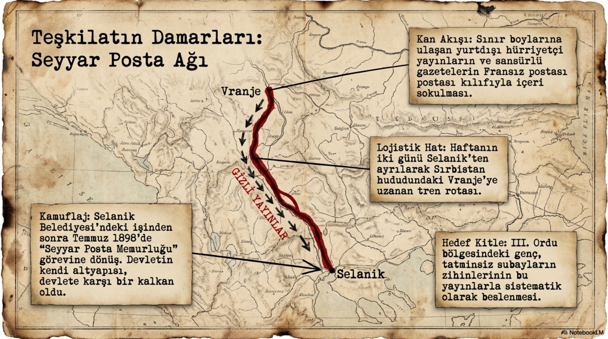
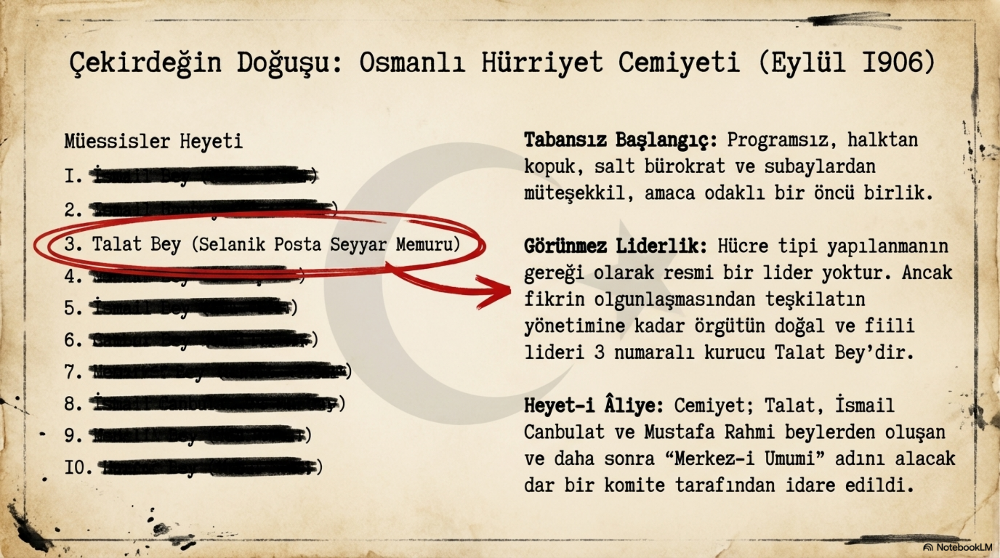
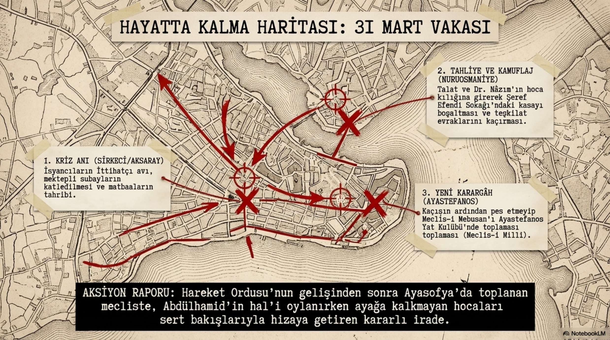
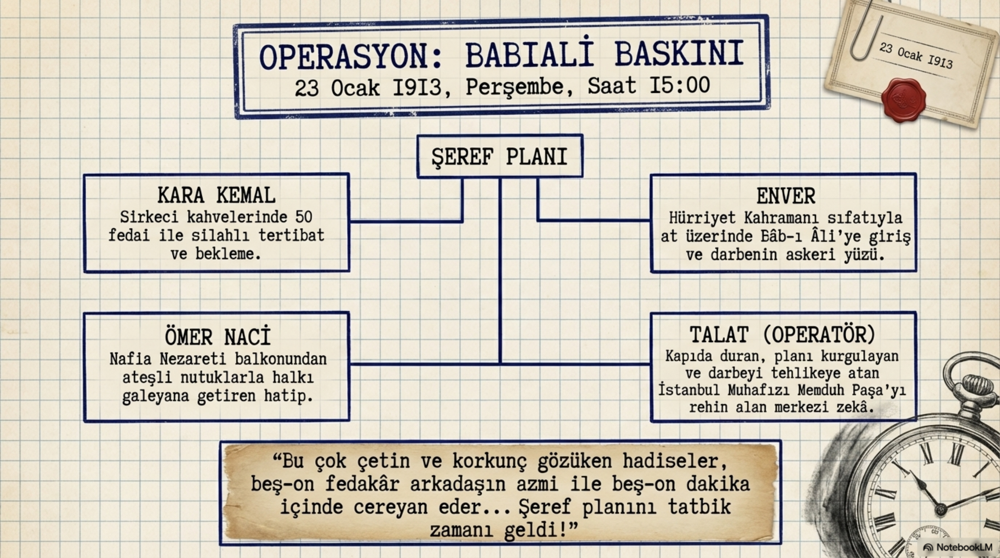
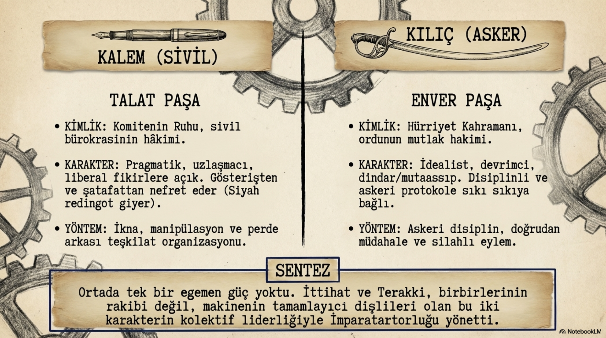
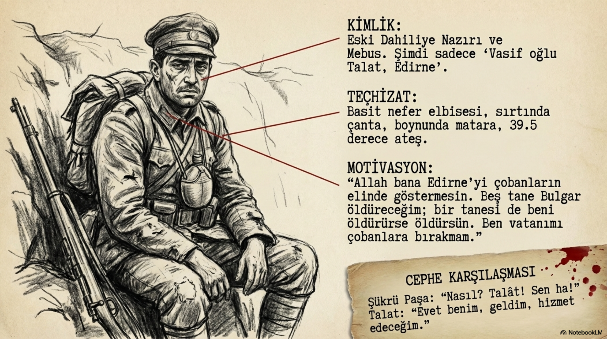

Bölüm 01
Posta Memurundan Komitenin Ruhuna
Mehmed Talat 1874’te Edirne’de doğdu. Bu doğum yeri önemlidir; çünkü Edirne, imparatorluğun Rumeli aklıyla İstanbul arasında duran şehirlerinden biridir. Sınır havasını, Balkan gerilimini, taşra bürokrasisini, askerî hareketliliği ve imparatorluğun çözülme telaşını erken yaşta hissettiren bir yerdir. Talat’ın dünyası da tam buradan açılır. Ne yüksek bir hanedan çevresinden gelir ne de çocukluğundan itibaren büyük makamlar için cilalanmış bir adamdır. Hatta okul hayatı bile pürüzlüdür. Edirne Askerî Rüştiyesi’nden bir öğretmenle yaşadığı kavga yüzünden ayrılır; yani daha başlangıçta uslu, hizaya kolay giren, önüne konulan sırada sessizce oturan bir karakter yoktur.
Sonra Edirne’deki Alyans İsraelite okulunda Fransızca öğrenir, aynı okulda Türkçe öğretir. Bu ayrıntı küçük görünür ama Talat’ın siyasi hayatının arka odasını aydınlatır. Fransızcayla, şehirdeki gayrimüslim çevrelerle, Yahudi cemaatinin sosyal ağıyla ve daha sonra mason localarına uzanacak ilişkilerle burada temas kurar. İttihatçılığın yalnızca askerî okul koridorlarında değil, limanlarda, postanelerde, yabancı okullarda, cemaat çevrelerinde ve sınır şehirlerinde mayalandığını görürüz. Talat da bu karmaşık imparatorluk coğrafyasının çocuğudur.
1891’de Edirne Posta ve Telgraf İdaresi’nde çalışmaya başladı. İşte burada Talat’ın asıl kabiliyeti belirginleşir. Posta memurluğu yalnızca mektup taşıma işi değildir. Hele Abdülhamid devrinde haberleşme, siyaset demektir. Kim kime yazıyor, hangi gazete nereden geliyor, hangi mektup hangi adrese ulaşıyor, hangi şehirde hangi ses yükseliyor; bunların hepsi iktidarın da muhalefetin de dikkat kesildiği konulardır. Talat bu sistemin içinden geçerek büyüdü. Telgrafın hızını, postanın sabrını, evrakın kıymetini ve haberin iktidarını öğrendi. Sonradan komite örgütlerken ona lazım olacak reflekslerin bir kısmı masa başında değil, posta hattında kazanıldı.
Talat’ın kökeni üzerinden yapılan saldırılar da bu dönemin zehirli dilini gösterir. Ona çingene diyenler, onu küçültmek isteyenler, sıradan bir posta memurunun imparatorluk siyasetine ağırlık koymasını hazmedemeyenler vardı. Talat bu iddiaları sert biçimde reddetti ve ailesinin eski Müslüman-Türk bir kökten geldiğini vurguladı. Burada mesele yalnızca soy tartışması değildir. İmparatorluğun son döneminde kimlik, sadakat ve meşruiyet kavgası aynı sofraya oturmuştur. Talat’ın hayatı boyunca üzerine yapışan bu dil, onun hem sınıfsal hem etnik hem siyasi olarak nasıl hedef alındığını da gösterir.
Bölüm 02
Edirne Hapishanesi: Teşkilat Dersinin İlk Sınıfı
Talat’ın İttihatçılıkla tanışmasında iki isim belirleyici olur: eniştesi İsmail Yürük ve İpekli Hafız İbrahim. Rusçuk’taki İttihat ve Terakki çevresinden gelen fikirler, Edirne’deki hürriyetçi konuşmalar, Jön Türk gazeteleri ve evlerde okunan mektuplar Talat’ın zihnini değiştirir. Başlangıçta bu işler bugünün okuruna küçük toplantılar gibi gelebilir. Birkaç genç, birkaç gazete, bazı mektuplar, padişah idaresine karşı fısıltılı cümleler... Fakat Abdülhamid devrinde fısıltı bile siyasettir. Hele o fısıltı posta memurunun evinde, subayların arasında, öğretmenlerin ve memurların dilinde dolaşıyorsa mesele artık yalnızca fikir değildir.
1896’da Edirne’deki grup açığa çıktı. Bir dergi, bir ihbar, bir takip, bir sorgu ve ardından hapis... Talat altı ay boyunca sorgulandı. Sonunda kalebentlik cezası aldı; ceza daha sonra indirildi ama bu süreç onun hayatında bir eşik oldu. İşin ilginç taraflarından biri, mahkemede aşk mektuplarının bile delil gibi kullanılmasıdır. Devlet, muhalifin yalnızca siyasi cümlesine değil, mahrem hayatına da uzanır. Talat burada şunu çok erken öğrendi: Dağınık cesaret yetmez. Sadece öfkelenmek yetmez. Sadece padişaha kızmak yetmez. Eğer karşında arşivi, hafiyesi, mahkemesi, memuru, zaptiyesi ve hapishanesi olan bir devlet varsa senin de örgütün olacak.
1898’de Abdülhamid’in affıyla serbest bırakıldı ama bu özgürlük tam özgürlük değildi. Edirne’de kalamayacak, İstanbul’a gidemeyecek, Selanik’e gönderilecekti. Yani devlet onu cezalandırırken aslında İttihatçılık tarihinin en kritik şehirlerinden birine yolladı. Tarihin ince alayı burada başlar. Talat’ı Edirne’den koparıp Selanik’e göndermek, onu siyasetten uzaklaştırmak için düşünülmüş olabilir; fakat sonuç tam tersi oldu. Selanik, Talat’ın gerçek okuluna dönüştü.
Bölüm 03
Selanik: Posta Hattı, Birahane Masası ve Yüksek Sesle İsyan
Selanik’e geldiğinde Talat’ın hayatı kolay değildi. Sürgün havası, maddi sıkıntı, küçük maaş, tutunma çabası... Fakat o şehrin siyasi iklimi Edirne’den daha hareketliydi. Rumeli’de askerî birlikler, konsolosluklar, yabancı okullar, mason locaları, farklı milletlerden cemaatler, gazeteler ve sınır ötesi bağlantılar iç içeydi. Selanik bir şehirden çok, imparatorluğun sinir uçlarından biriydi. Talat önce belediyede çalıştı, ardından tekrar posta hattına döndü. Seyyar posta memurluğu ona paha biçilmez bir imkan verdi: şehirler arasında dolaşmak, sınır hattına yaklaşmak, yayın taşımak, insan tanımak, haber toplamak.

Selanik ile Vranja arasındaki hat, Talat için adeta gizli bir damar oldu. Yurt dışından gelen hürriyetçi yayınlar sınırdan alınıyor, Selanik’e taşınıyor, oradan III. Ordu subaylarına ve güvenilir çevrelere ulaştırılıyordu. Bu işi bugün sadece kaçak yayın taşıma diye okumak eksik kalır. Bu hat, fikirle askeri, memurla subayı, şehirle sınırı, Paris’teki muhalefetle Rumeli’deki pratik gücü birbirine bağlayan küçük ama kritik bir mekanizmaydı. Talat’ın telgrafçı zekâsı burada örgütçü zekâya dönüşmeye başladı.
Selanik’te Yonyo Birahanesi, Kule Kahveleri ve benzeri mekanlar da Talat’ın siyaset sahnesidir. Mithat Şükrü, Rahmi, İsmail Canbulat ve daha sonra diğer isimlerle kurulan ilişkiler burada yoğunlaşır. Talat’ın kişiliği bu masalarda kendini belli eder: çekingen değildir, hafiye var diye sesini kısmayı pek bilmez, hatta bazen tam tersine sesi yükseltir. Abdülhamid’e karşı öfkesini saklamaz. Bu tavır elbette akıllıca mıydı, tartışılır. Ama Talat’ın karakterindeki gözü karalığı ve çevresindekileri etkileyen cesareti gösterir. Bazı insanlar fikri yazarak yayar, bazıları silahla taşır, bazıları da masada konuşurken etrafındakilerin nabzını değiştirir. Talat üçüncü türdendir.
Bölüm 04
Kendi Kendimize Çalışacağız
1902’de Talat ve arkadaşları Paris merkezine ulaşmak, oradaki İttihat ve Terakki kaydına dahil olmak istedi. Bekledikleri cevap gelmedi. Paris’teki hareket dağılmış, kırgın, tartışmalı ve yer yer sahadan kopuk bir hale gelmişti. Rumeli’deki adamlar risk alıyor, hafiyelerle boğuşuyor, sınırdan yayın taşıyor, askerlerle temas kuruyor; Paris’ten ise sahadaki ateşi büyütecek güçlü bir merkez dili gelmiyordu. Talat bu hayal kırıklığından çok net bir sonuç çıkardı: Kendi kendilerine çalışacaklardı.
Bu cümle Talat’ın siyasi karakterini anlamak için anahtardır. O, izin bekleyen bir muhalif değildir. Merkez onay versin, büyük ağabeyler kabul etsin, Paris defterine ismimiz yazılsın diye bekleyen biri değildir. Eğer merkez çalışmıyorsa yeni merkez kurulur. Eğer eski yapı yetersiz kalıyorsa yeni hücre kurulur. Eğer gazete gelmiyorsa getirmenin yolu bulunur. Eğer insan korkuyorsa yemin ettirilir. Talat’ın İttihatçılığı tam burada şekillenir: fikir güzel ama örgüt yoksa yarımdır; cesaret kıymetli ama disiplin yoksa dağılır; öfke güçlüdür ama kadro yoksa boşa yanar.
Bölüm 05
Mason Locası Bir Sığınak, Cemiyet Başka Bir Şey
Selanik’te mason locaları İttihatçılar için sadece sembolik bir mesele değildi. Özellikle İtalyan himayesi altındaki localar, hafiyelerin doğrudan baskısından bir ölçüde korunma alanı sağlıyordu. Emanuel Karasu gibi isimler üzerinden kurulan temaslar, Talat ve arkadaşlarına toplantı yapabilecekleri, birbirlerini sınayabilecekleri, dışarıdan bakıldığında daha güvenli görünen bir zemin sundu. Talat Macedonia Risorta ve Veritas gibi localarla temas etti. Fakat burada dikkatli olmak gerekir: Loca, İttihatçılığı açıklayan sihirli anahtar değildir. Loca bir sığınak, bir temas alanı, bir güvenlik şemsiyesidir; asıl mesele yine Cemiyetin kendisidir.

26 Ağustos 1906’da artık loca dışında toplanıp ayrı bir cemiyet kurma fikri olgunlaştı. İlk ad olarak Hilâl düşünüldü. 7 Eylül 1906’da ilk çekirdek şekillendi. 18 Eylül’de Ömer Naci’nin evinde isim Osmanlı Hürriyet Cemiyeti’ne dönüştü. Bu kuruluş, İttihatçılık tarihinde büyük bir kırılmadır. Çünkü artık sahada, Rumeli’nin sıcak gerçekliği içinde, asker ve sivil memurların birlikte hareket ettiği yeni bir yapı vardır. Paris’in eski muhalefet diliyle Selanik’in hareket dili daha sonra birleşecektir; ama ilk kıvılcım burada çakılmıştır.
Talat bu yapının görünmez merkezidir. Enver’in yıldızı henüz bütün gökyüzünü kaplamamıştır; Dr. Nâzım ve Bahaeddin Şakir Paris-Selanik hattını birleştireceklerdir; Ömer Naci sözün ve propagandanın ateşini taşıyacaktır. Fakat Talat, insanları bir araya getiren, toplantıyı yürüten, riski tartan, örgütün ruhunu diri tutan adamdır. Onun liderliği kürsüde parlayan bir liderlikten çok, masanın etrafında insanları aynı karara doğru çeken bir liderliktir.
Bölüm 06
İstanbul’a Çıkış: Kayserili Ne Hâlde?
1908’de Meşrutiyet yeniden ilan edilince Talat’ın rolü yeraltından devlet katına doğru kaydı. 2 Ağustos 1908’de İstanbul’a geldiğinde artık yalnızca Selanik’teki komiteci değildir; Cemiyetin İstanbul’daki pazarlık gücünü temsil eden isimlerden biridir. Abdülhamid için kullandığı “Kayserili” ifadesi çok şey anlatır. Bu sözde hem alay vardır hem de padişahın zekâsına duyulan tuhaf bir saygı. Talat, Abdülhamid’i kaba bir karikatüre indirgemez. Onun akıllı, sabırlı, hamle yapmayı bilen, karşısındakini bölmeyi ve zaman kazanmayı seven bir siyasetçi olduğunu bilir.
Bu yüzden Meşrutiyet sonrası ilk büyük soru şudur: Abdülhamid’e güvenilecek mi? Talat burada hemen tahtı devirelim diyen çizgide durmaz. Padişahı bir denge unsuru olarak görmeyi tercih eder. Bu tutum, Talat’ın pragmatik tarafını gösterir. O, siyaseti yalnızca ilke cümleleriyle değil, güç dengeleriyle okur. İttihatçılar henüz doğrudan hükümet kuracak durumda değildir. Devletin bütün mekanizmasını bir anda ellerine almanın riskini bilirler. Bu nedenle ilk dönemde hükümeti perde arkasından yönlendirme stratejisi öne çıkar.
Sadrazam Said Paşa ile yapılan görüşmelerde Talat’ın tavrı serttir. Seçimlerin yapılmasını, eski düzenin aynı tas aynı hamam devam etmemesini ister. Cemiyetin İstanbul’da ağırlık koyduğu ilk büyük anlardan biri budur. Said Paşa’nın istifası, Kâmil Paşa’nın sadarete gelişi ve Meşrutiyet sonrası yeni siyasal zeminin kurulması, Talat’ın artık yalnızca gizli örgüt adamı değil, açık siyasetin de önemli aktörü olduğunu gösterir. Fakat bu geçiş pürüzsüz değildir. İstanbul şubesiyle Selanik merkezinin gerilimleri, Cemiyetin kendi iç hiyerarşisinin tam oturmadığını gösterir. Yani hürriyet ilan edilmiştir ama ortada henüz sakin bir düzen yoktur.
Bölüm 07
31 Mart: Sokak, Panik ve Soğukkanlılık
31 Mart Vakası, İttihatçıların zihninde derin bir yara açtı. Çünkü bu olay onlara Meşrutiyet’in ilanıyla işin bitmediğini, hatta asıl kavganın yeni başladığını gösterdi. İstanbul sokaklarında askerî isyan, medrese talebeleri, dini söylem, muhalefet, saray çevresi ve Cemiyet düşmanlığı birbirine karıştı. Talat ve Dr. Nâzım gibi isimler doğrudan hedef haline geldi. Talat o gece Nuruosmaniye’deki merkezde olmadığı için yakalanmaktan kurtuldu. Daha sonra hoca kılığına girmiş Dr. Nâzım’la buluştu, merkezdeki para ve evrakı kurtarmaya çalıştı, ardından Ahmed Rıza’nın yanında saklandı.

Bu sahne Talat’ın karakterini iyi gösterir. Panik vardır ama dağılma yoktur. Tehlike vardır ama evrak unutulmaz. Sokak kaynarken bile örgütün parası, belgesi, bağlantısı düşünülür. Talat için siyaset biraz da budur: İnsanlar bağırırken defteri saklamak, herkes kaçarken haber hattını korumak, kriz anında meclisi nasıl toplayacağını düşünmek. 31 Mart’tan sonra Hareket Ordusu’nun gelişi ve Abdülhamid’in tahttan indirilmesi, İttihatçılara büyük bir ders verdi. Artık devletin içindeki güç mücadelesi daha sert okunacaktı. Cemiyet, meşrutiyeti savunma adına daha merkeziyetçi, daha güvensiz ve daha müdahaleci hale gelecekti.
Bölüm 08
Muhalefet, Basın ve İstifa
Meşrutiyet sonrasında Talat’ın en önemli görevlerinden biri Dahiliye Nazırlığı oldu. Bu makam, bugünün diliyle sadece içişleri yönetimi değildir; taşra idaresi, güvenlik, seçim atmosferi, memurlar, vilayetler, muhalefet ve kamu düzeni gibi çok geniş bir alanı kapsar. Talat burada hem devlet adamı olarak yükseldi hem de Cemiyetin bütün yıpratıcı yükünü üzerine çekti. Basın özgürlüğü, muhalefet partileri, sokak hareketleri, komite baskısı, siyasi cinayetler ve hükümet krizleri içinde İttihatçı iktidar pratiği kolayca savunulacak bir masal olmaktan çıktı.
Ahmed Samim cinayeti gibi olaylar Talat’ın üzerindeki baskıyı artırdı. Muhalefet, İttihat ve Terakki’yi yalnızca fikirle değil, zorla, baskıyla ve tehdit diliyle siyaset yapmakla suçluyordu. Talat bu dönemde devletin asayişini savunan, Cemiyetin itibarını korumaya çalışan ama aynı zamanda muhalefetin öfkesini büyüten bir figür haline geldi. 1911’de Dahiliye Nazırlığı’ndan ayrılması, onun siyasi kariyerinin sonu değil; İttihatçılığın iktidara yürürken ödediği ilk büyük yıpranma bedellerinden biridir.
Bölüm 09
Babıali Baskını: Cemiyet Devlet Kapısından Zorla Giriyor
Balkan Harbi, İttihatçıların dünyasını altüst etti. Rumeli’nin kaybı yalnızca toprak kaybı değildi; Cemiyetin doğduğu coğrafyanın, insan kaynaklarının, hatıralarının ve siyasi meşruiyetinin büyük ölçüde sarsılmasıydı. Edirne meselesi, hükümetin barış siyaseti, ordu içindeki kırılmalar ve kamuoyundaki öfke bir araya gelince 23 Ocak 1913’te Babıali Baskını’na giden yol açıldı. Burada romantik bir devrim tablosu yoktur. Silah vardır, kan vardır, baskı vardır, karar alma mekanizmasının zorla değiştirilmesi vardır.

Talat bu sürecin yalnızca izleyicisi değildir. Enver’in askerî cesareti ve sokak hareketi ne kadar görünürse, Talat’ın siyasi koordinasyonu ve operasyon aklı da o kadar belirleyicidir. Hükümetin artık sadece sadrazam üzerinden idare edilen zayıf bir yapı haline geldiğini düşünür. Bu gerekçeyle müdahaleyi zorunlu görür. Fakat buradaki zorunluluk iddiası, olayın ağırlığını hafifletmez. Babıali Baskını, İttihat ve Terakki’nin iktidar tarihindeki en sert eşiklerden biridir. Cemiyet bu kapıdan girdikten sonra artık muhalefet günlerinin masumiyetine dönemez.
Edirne’nin geri alınması, Enver’in yıldızını büyüttü; Talat’ın da devlet içindeki ağırlığını artırdı. Bundan sonra İttihat ve Terakki’nin yönetim dili daha açık biçimde Talat-Enver-Cemal üçlüsü etrafında şekillenecekti. Ama bu üçlü yapıyı tek adam diktası gibi okumak da eksik kalır. Merkez-i Umumi, Cemiyet içi dengeler, Ziya Gökalp, Bahaeddin Şakir, Dr. Nâzım ve diğer kadrolar karar süreçlerinde etkiliydi. Talat güçlüydü, hatta çoğu zaman en güçlü siyasi akıldı; fakat mutlak ve yalnız bir hükümdar değildi.
Bölüm 10
Kalem ve Kılıç: Talat ile Enver
Talat ile Enver’i yan yana düşünmek İttihatçı iktidarı anlamayı kolaylaştırır. Enver kılıcı, üniformayı, askerî şöhreti, kahramanlık dilini ve risk almayı temsil eder. Talat ise kalemi, bürokrasiyi, telgrafı, parti kararını, kabine dengesini ve idareyi temsil eder. Enver sahneye çıktığında gözler ona döner; Talat sahnede az parlayıp odanın kararını değiştiren adamdır. Bu yüzden Talat’ın gücü bazen görünmezleşir. Çünkü onun yaptığı iş çoğu zaman nutukta değil, görüşmede; meydanda değil, dosyada; cephede değil, hükümet odasında ortaya çıkar.

Harbiye Nazırlığı meselesinde Talat’ın Enver’i desteklemesi de bu ikili ilişkiyi gösterir. Cemal Paşa’nın arzuları, Enver’in yükselişi, ordunun gençleştirilmesi ve Alman askerî etkisi aynı dönemde iç içe geçer. Talat burada askerî gücü doğrudan kendisine almaya kalkmaz; onu Enver üzerinden yönetilebilir bir ittihatçı hat içinde tutmaya çalışır. Bu strateji kısa vadede Cemiyete hız kazandırır. Uzun vadede ise Enver’in maceracı askeri siyasetinin sonuçlarıyla birlikte Talat’ın da tarihî sorumluluğunu büyütür.
Bölüm 11
Savaşa Giren Devlet, Hesabı Tutmayan Dünya
1914’te Osmanlı Devleti’nin Almanya ile yaptığı gizli ittifak ve ardından savaşa girişi, Talat’ın kariyerindeki en büyük tarihî sorumluluklardan biridir. Talat savaşı dört yıl sürecek, imparatorlukları yutacak, sınırları parçalayacak, toplumları kıracak bir felaket olarak öngörmedi. Bu konuda yalnız değildi; Avrupa’nın pek çok başkentinde de savaşın kısa süreceği sanılıyordu. Fakat bu ortak yanılgı, kararın ağırlığını azaltmaz. Devletin kaderi birkaç ay hesabıyla değil, milyonlarca insanın hayatıyla ölçülür.

Talat savaş yıllarında hem Cemiyetin hem devletin en ağır dosyalarıyla karşı karşıya kaldı. İaşe, güvenlik, göç, cephe gerisi, vilayet yönetimi, askerî ihtiyaçlar ve uluslararası baskılar aynı anda geldi. Bu noktada Talat’ın soğukkanlı devlet aklı ile insan hayatını rakamlara ve sevk listelerine indirgeme tehlikesi yan yana durur. Onu anlamaya çalışmak, onu temize çıkarmak demek değildir. Tam tersine, tarihî kişileri anlamak bazen onların en ağır kararlarına daha yakından bakmayı gerektirir.
Bölüm 12
1915’in Ağır Dosyası
Bugün Talat Paşa’nın mirasının en ağır ve en tartışmalı başlığı 1915 sevk ve iskân, yani tehcir kararıdır. Osmanlı hükümeti bu kararı savaş şartları, cephe gerisi güvenliği, isyan korkusu ve Rus ilerleyişiyle bağlantılı biçimde savundu. Fakat uygulama, yüzbinlerce insanın yerinden edilmesi, ölüm, açlık, hastalık, yağma, saldırı ve büyük bir toplumsal kopuşla sonuçlandı. Bu nedenle Talat’ın adı yalnızca İttihatçı devlet aklıyla değil, geç Osmanlı tarihinin en acı dosyalarından biriyle de birlikte anılır.
Bu başlığı yok saymak biyografi değil reklam olur. Talat’ı yalnızca bu başlığa indirgemek ise onun nasıl bir örgütçü olarak yükseldiğini, hangi korkularla karar verdiğini, devletin dağılma paniğinin nasıl bir sertliğe dönüştüğünü anlamayı engeller. Biz burada ne mahkeme salonu kuruyoruz ne de kahramanlık afişi asıyoruz. Talat’ın hayatına bakarken şu zor soruyu açık tutmak gerekir: Bir hürriyet komitecisi, yıllar içinde nasıl imparatorluğun en sert güvenlik kararlarının siyasi sorumlularından biri haline geldi? İşte İttihatçılığı kişiler üzerinden okumamızın sebebi biraz da budur. Çünkü hareketin bütün çelişkileri, kişilerin hayatında ete kemiğe bürünür.
Bölüm 13
Sadrazamlığı İstemeyen Paşa
Talat’ın Paşa oluşu bile ilginçtir. Asker kökenli bir paşa değildir. Savaş yıllarında sembolik askerî rütbeler aldı, üniformayı sevdi, hatta bu işin çocuksu denebilecek bir heyecanını yaşadı. Fakat asıl Paşa unvanı sadrazamlığıyla geldi. 1917’de Said Halim Paşa’nın istifasından sonra Cemiyetin ileri gelenleri sadrazamlık için Talat’ı işaret etti. Talat bu göreve atlamadı; hatta istemedi. Ziya Gökalp’in sert çıkışı meşhurdur: sadareti kabul etmezse vatan haini sayılacağını söyleyerek onu görevi almaya zorladı.
Talat’ın sadrazamlığı, İttihat ve Terakki’nin devletle neredeyse tamamen özdeşleştiği dönemdir. Artık Cemiyet yalnızca iktidarı etkileyen bir örgüt değildir; iktidarın kendisidir. Talat bu makamda imparatorluğun son büyük savaş yorgunluğunu, Almanya’ya bağımlılığın sıkışmasını, cephelerdeki kırılmayı, iç sorunları ve diplomatik çaresizliği omuzlamak zorunda kaldı. Fakat Talat’ın sadrazamlığı bir zafer tacından çok, çöküşün ağırlığını taşıyan bir sorumluluk gibi durur. Dostlarının onu tebrik etmekten çok teselli etmesi boşuna değildir.
Bölüm 14
Berlin’de Son
1918’de savaş kaybedildiğinde İttihatçı liderler için İstanbul artık güvenli değildi. Talat, Enver ve Cemal gibi isimler ülkeyi terk etti. Bu kaçış, onlar için bir stratejik geri çekilme miydi, yoksa hesap vermekten kaçış mıydı? Bu soru hâlâ tartışılır. Fakat sonuç açıktır: İttihat ve Terakki’nin iktidar kadrosu imparatorluğu kaybetmiş, devletin merkezinden Avrupa sürgününe savrulmuştu. Talat Berlin’e yerleşti. Artık telgraf hatlarını yöneten, sadrazamlık koltuğunda oturan, Cemiyetin karar odasında ağırlık koyan adam değil; yenilmiş bir imparatorluğun en çok aranan ve en çok nefret edilen figürlerinden biriydi.
15 Mart 1921’de Berlin’de Soghomon Tehlirian tarafından öldürüldü. Bu suikast, yalnızca bir kişinin ölümü değildi; 1915’in, savaşın, sürgünün, intikamın, hesaplaşmanın ve çöken imparatorluk hafızasının tek sokakta patlamasıydı. Talat’ın ölümü de hayatı gibi sade bir kapanış sunmaz. Onu sevenler için devlet kurtarmaya çalışan büyük bir teşkilatçı, düşmanları için felaketlerin siyasi sorumlusu, tarih içinse kolayca etiketlenemeyen büyük ve ağır bir dosyadır.
Bölüm 15
Talat İttihatçılığın Hangi Damarını Temsil Eder?
Talat Paşa, İttihatçılığın örgüt ve iktidar damarını temsil eder. Ahmed Rıza fikir ve yayın tarafını, Dr. Nâzım seyyah komiteci hattı, Bahaeddin Şakir teşkilatın sert operasyon aklını gösteriyorsa, Talat bütün bunları devletin karar mekanizmasına bağlayan kişidir. Posta memuru olarak başladığı yerde haberin kıymetini öğrendi; Selanik’te örgüt kurarken insanın kıymetini öğrendi; İstanbul’da sadrazamlarla pazarlık ederken gücün kıymetini öğrendi; savaş yıllarında ise devlet aklının insan hayatı karşısındaki korkutucu soğukluğunu gösterdi.
Bu yüzden Talat’ı yalnızca “büyük lider” diye anlatmak da yetersizdir, yalnızca “karanlık adam” diye kapatmak da. O, İttihat ve Terakki’nin büyüklüğünü de açmazını da üzerinde taşır. Hürriyet için yola çıkan bir hareketin iktidara gelince nasıl sertleştiğini, örgüt disiplininin devlet yönetimine dönüşünce nasıl başka bir şeye benzediğini, vatanı kurtarma arzusunun bazen insanı nasıl çok ağır kararların eşiğine getirdiğini Talat’ın hayatında görürüz. Yani Talat biyografisi, bir adamın hikayesinden fazlasıdır. İttihatçılığın yeraltından iktidara, hürriyet sloganından güvenlik devletine, posta hattından sadrazamlık makamına uzanan en keskin yürüyüşüdür.
Biz bu sekiz kişiye ayrı ayrı bakarken tam da bunu göstermek istiyoruz. İttihat ve Terakki’yi sadece kongreler, gazeteler, tarihler ve hükümet krizleri üzerinden anlatırsak ruhu eksik kalır. Kişilere bakınca hareketin farklı damarları görünür. Talat’ın damarında teşkilat vardır, sezgi vardır, soğukkanlılık vardır, iktidar vardır ve elbette ağır sorumluluk vardır. Bu yüzden Talat dosyası kapandığında geriye tek bir cümle kalır: Komiteyi anlamak için Talat’a bak; devleti ele geçiren komitenin neye dönüştüğünü anlamak için yine Talat’a bak.
Bölüm 16
Kaynakça
Not: Metin yayın diliyle yeniden kurulmuş, doğrudan alıntı yerine anlatı bütünlüğü tercih edilmiştir. Ama emeğe saygı için ana kaynak özellikle görünür bırakılmıştır.